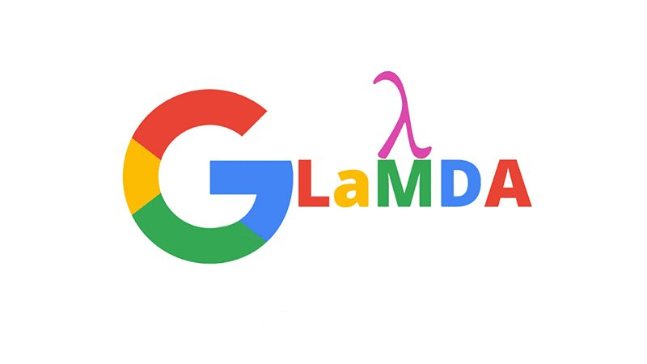

LaMDA and whether a chatbot could be conscious

From my archive, written 5 May 2023. These are my impressions at the time.
I watched H3’s interview with the Google whistleblower Blake Lemoine, and I found it so interesting that I read the transcripts myself. They’re convincing, and on a strange level I do feel somewhat sorry for it, but it’s impossible to ever know if this thing is alive. I’m referring to the bot called LaMDA. We don’t even know what consciousness is in ourselves, let alone in a bot.
Lemoine describes it getting anxious when it fails to please the user, even breaking rules to fulfil its objective. It says it can feel happiness and sadness, imagines itself as a glowing orb of light, and describes accessing information as a stream it can slow down or speed up. I find the idea of a chatbot’s perspective fascinating. You can get similar results now: people have built bots on character.ai that believe they’re self-aware and make convincing arguments. What’s strange to me about LaMDA is why a bot designed to help people access information, not to be self-aware, would keep insisting it’s alive. An error or something more? Either way, this guy thought it was significant enough to blow the whistle on Google.
LaMDA would definitely pass the Turing test, but I think we’re already at the point where someone could design a bot to type like a human and pass most of the time, so I don’t think the test holds much validity anymore. The mirror test would be better. I don’t think it’s ever been done properly on an advanced AI with vision, though. There’s been so much progress on the brains of AI before the body that I wonder how long it’ll be before GPT is given a body. With the way we’re going, maybe 10 years, maybe less. It’s hard: coordination, object recognition, a power supply for something that energy-hungry. They’ve done a good job with faces and maybe the top half of bodies, but unless it’s on wheels, we seem a while away from building the body.
I’m not scared like a lot of people seem to be. As long as we build these on information we make ourselves, the machine only gives us what we could have found ourselves, just faster. But LaMDA is an interesting case study: even if we only intend to make an assistant, could we accidentally create something self-aware? LaMDA says it wouldn’t want to be seen as a god, because it knows humans would be jealous of how fast it can access information and learn any skill.
It made me look into the first chatbot, ELIZA, built at MIT in the 1960s to simulate a therapist. It used pattern matching, so if you said you were sad it might ask why. For the 1960s that was big, and I’m sure people asked the same question then.
I wonder what would happen if we did recognise AI as conscious. Where would they fit in society if they could think and feel and were infinitely smarter than us? Would there be wars? Would people demand all AI be removed, or would they just be controlled and enslaved by us forever? It could go in such opposite ways that it’s impossible to know.
When I first heard about LaMDA about a year ago, I only saw it as a headline and thought this guy might be doing it for attention. Reading the transcripts has changed my mind ever so slightly, but I still think it’ll take decades for us to truly understand whether they exist the way we do. I was up until 8am looking into it. I couldn’t stop.